In last week's workshop you setup your own Azure IoT Hub and sent data to it from the simulated device console app. The data was sent using the MQTT messaging protocol which you monitored in realtime using the Azure IoT Explorer tool. This week you will begin learning about serverless computing services, specifially Azure Functions. You will first create a basic function in VSC, and then next week you will turn it into a a trigger event for your IoT Hub, namely aka an Event Hub. The trigger event will be fired whenever you send data to your IoT hub and in this instance the trigger contains event code to take the sensor data from the simulated device app and store it in a database.
Part 1 - Create a Serverless Azure Function using VSC
Part 2 - Deploy a Serverless Function to Azure from VSC
For this part of the workshop you will need to ensure your development environment is fully set up. Please refer to workshop 1 for guidance on doing this. With VSC setup you can use the Functions extension to a function app project.
Open VSC and signin into your Azure subscription:
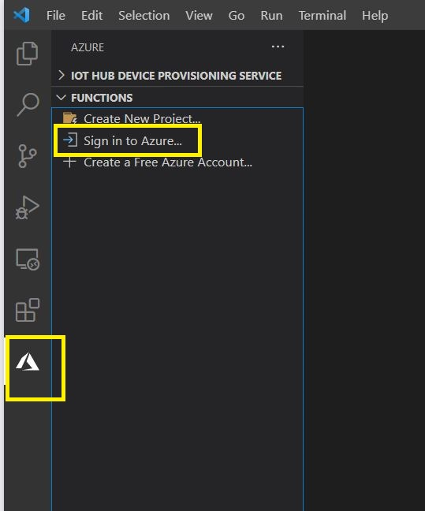
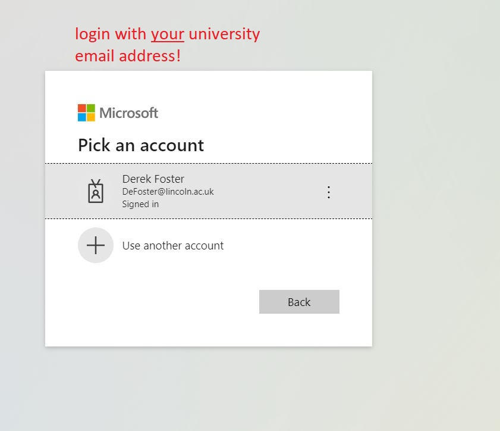
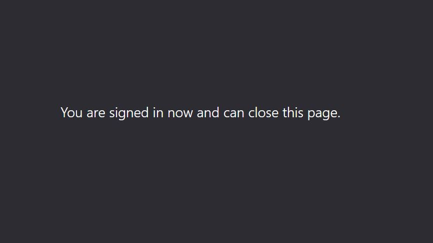
Now return to VSC and you will see your university email address for Azure on bottom left:
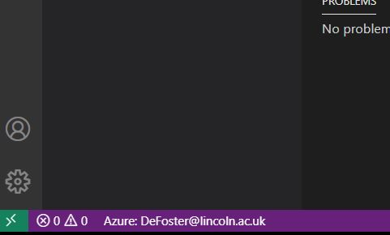
Next, follow the steps in the screenshots below to create a local Azure Functions project which you will publish and deploy to Azure in part 2 of the workshop. Note: The icon has moved to the "Workspace" in latest VSC
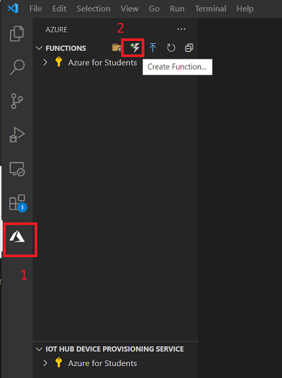
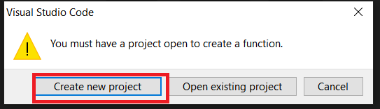
When you click on the Create new project button you will need to create a folder, I called my folder FunctionDemo.
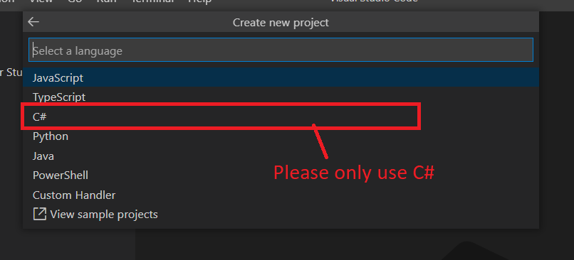
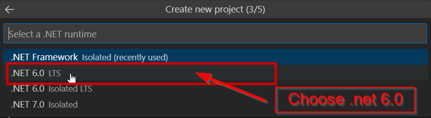
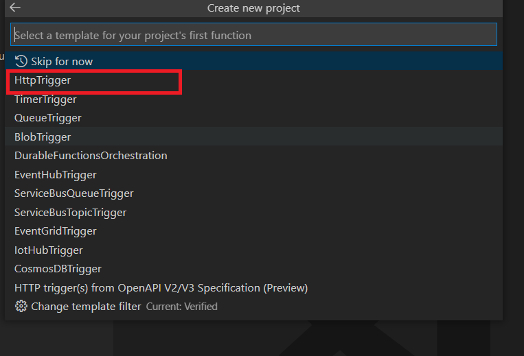
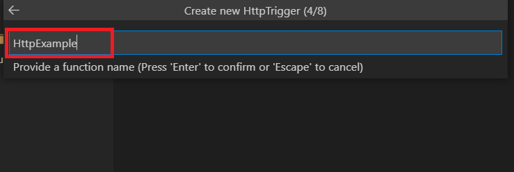
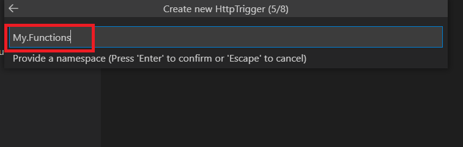
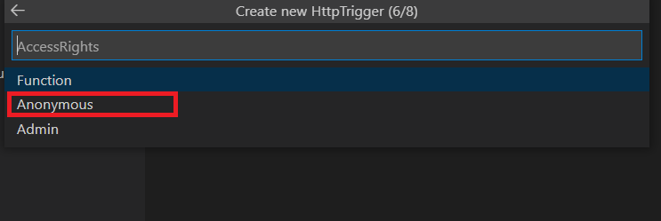
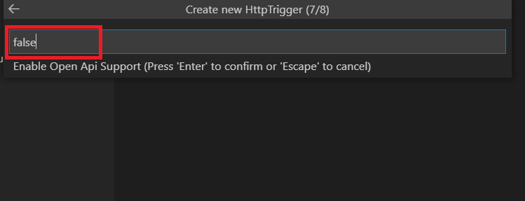
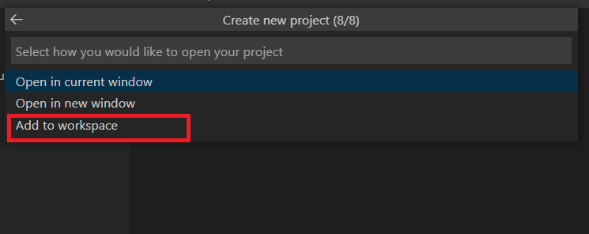
If you see a dependencies alert popup on the bottom right of VSC please click on the restore button to resolve. You should now have an HttpTrigger C# function template created as below. Have a look through the code, what do you think it does? He may have a fair idea after the week 4 lecture that covers REST concepts.You can view the local project files in the Explorer pane on the left of VSC. To learn more about files that are created, see Generated project files. The main file of interest for us at this point is the HttpExample.cs file that is shown below.
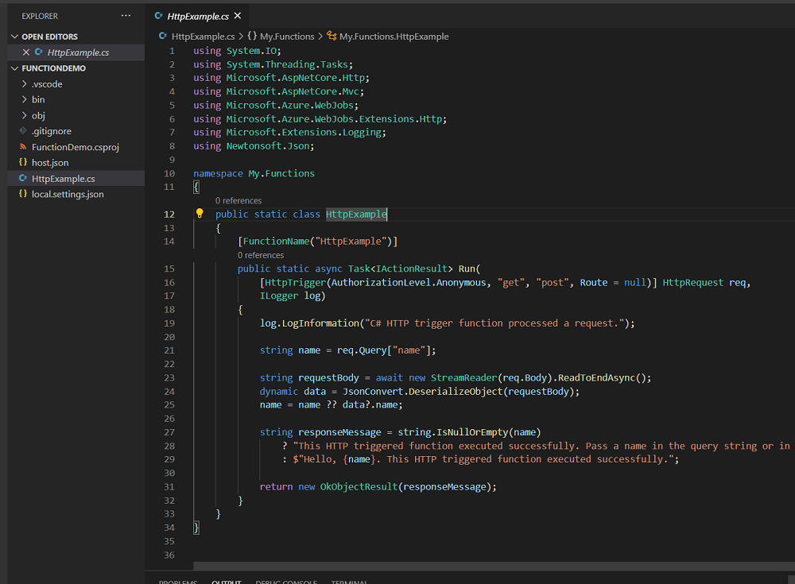
As you will have installed Azure Functions Core tools it will let you run the function on your local computer for testing, before deploying to Azure. Follow the below steps to run the function locally:
To call your function, press F5 to start the function app project. Output from Core Tools is displayed in the Terminal panel. Your app starts in the Terminal panel. You can see the local URL endpoint of your HTTP-triggered function running locally:
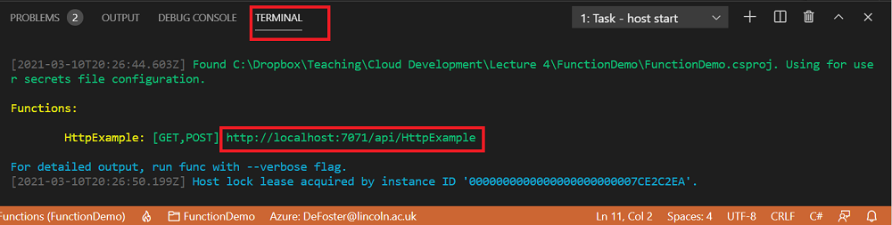
You can test the endpoint locally either in VSC or via a browser, We will do both here, first inside VSC. With Core Tools running (you did this in previous step), go to the Azure: Functions area. Under Functions, expand Local Project > Functions. Right-click (Windows) the HttpExample function and choose Execute Function Now option:
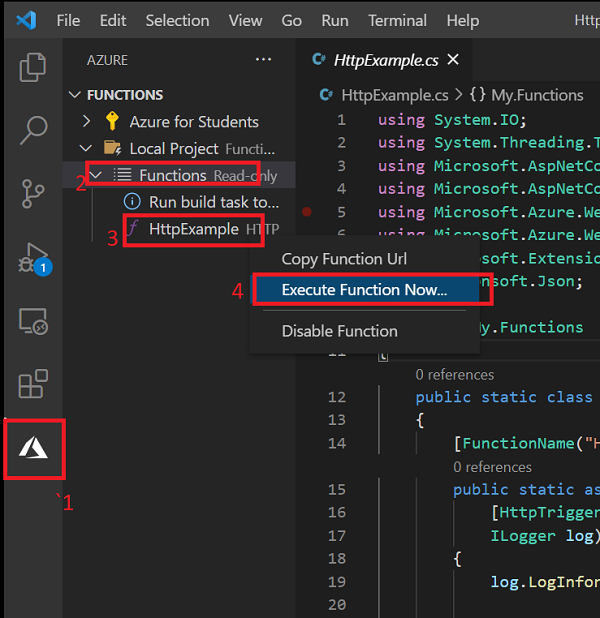
In Enter request body you see the request message body value of { "name": "Azure" }. Change the Azue value to your first name, the image below uses Derek's name :) Press Enter to send this request message to your function.
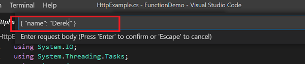
Expand the notification that pops up on the bottom right that shows the reponse from your function trigger executing, you will also see further information in the Terminal panel when it executes:
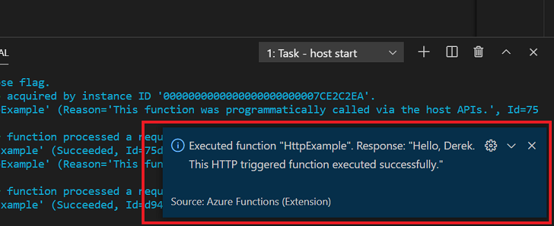
Now, we will do it again this time through the browser. To do this we need to get the local URL to paste into the browser. In the Terminal panel of VSC, scroll back up until you can see the URL of your function, it may not exactly look like the one shown below but may be similar:
Copy the http URL and paste it into a browser address bar and hit enter, you should see something similar to below:
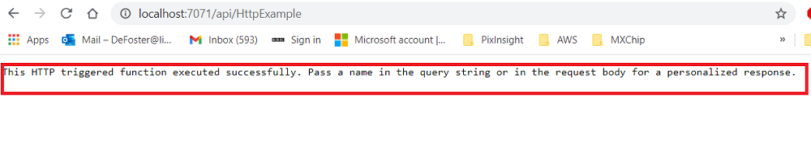
It did not work as intended as it was expecting the name value in the query string, remember from earlier you gave it the value of { "name": "Azure" } when testing the function from within VSC. Modify your function URL by adding the query string below to the end of the URL:
?name=Derek
The full URL will now look similar to below:
http://localhost:7071/api/HttpExample?name=Derek
Now your browser should return the below response:
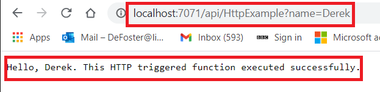
To do this testing, VSC uses the Azure Functions Core Tools, to stop it running, click in the Terminal pane and press Ctrl + C to stop Core Tools and disconnect the debugger.
You have now learned the basics of creating an HTTP Trigger Azure Function and running it locally. The next part of the workshop will show you how to take the function code and publish it to Azure.
In this part of the workshop, you will publish the local HTTP trigger function from part 1 to Azure using your Azure subscription. When published, the function will be addressable and triggered over the internet.
Choose the Azure icon in the Activity bar, then in the Azure: Functions area, choose the Deploy to function app button as shown below:
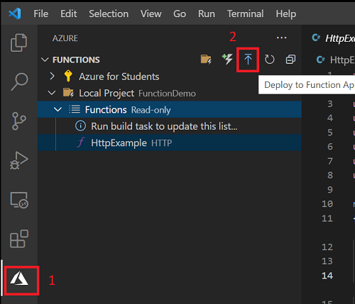
Next, provide the following information at the prompts:
Select Function App in Azure: Choose - Create new Function App. (Don't choose the Advanced option, which isn't covered in this workshop)
Enter a globally unique name for the function app: Type a name that is valid in a URL path. The name you type is validated to make sure that it's unique in Azure Functions - please remember what this is! In my example i used the name of defroster1 but you should use something different
Select a runtime stack: Select .NET Core 3.1
Select a location for new resources: For better performance, choose a region near your current location
The extension shows the status of individual resources as they are being created in Azure in the notification area:
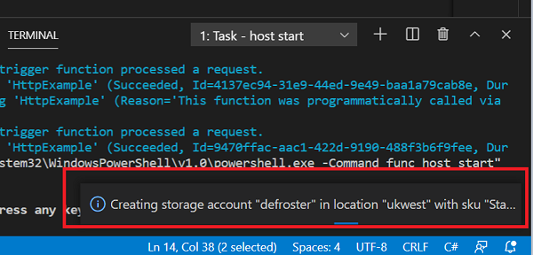
When the function and asssociated resources are fully deployed and published to Azure you will see the below notification message in the terminal pane. click the view output button:
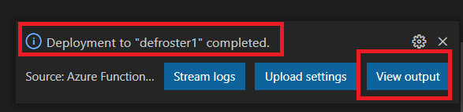
You will now be able to view the function deployment details including the name of the function app which in my case is defroster1 (see 1), and the live function app URL (see 1), and the specific URL of the function you created called HttpExample:
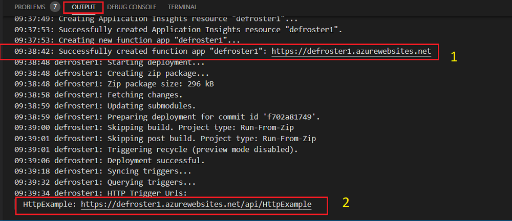
A function app can contain multiple functions, with each function having the same base URL, in the example above the base function app URL is, where the defroster1 part of the URL is globally unique:
https://defroster1.azurewebsites.net
while the actual full function URL for the function you created called HttpExample is:
https://defroster1.azurewebsites.net/api/HttpExample
For example, if I created a new function called GetAllData and published it to the function app called defroster1 I would then have another function to use with a URL of:
https://defroster1.azurewebsites.net/api/GetAllData
Next you will check that your HttpExample function is working, get the full live URL of *your* function (see 2 in above screenshot) and paste it into a browser. You should see the below message, the same as when you ran it locally in part 1 of the workshop:
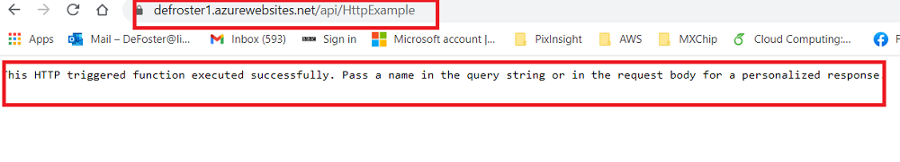
Now add the query string at the end of your function url, for my excample this would be:
https://defroster1.azurewebsites.net/api/HttpExample?name=Derek
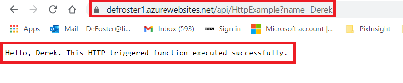
There you go! You now have a serverless function fully deployed to your Azure subscription. Functions will form the core of your assessment development work and you will be creating several of them to handle data being ingested by your Azure IoT hub and to save and retrieve sensor data from a database.
Next, you will learn where on the Azure portal your published function is hosted. Login into the Azure portal here and follow the screenshots below to view your function:
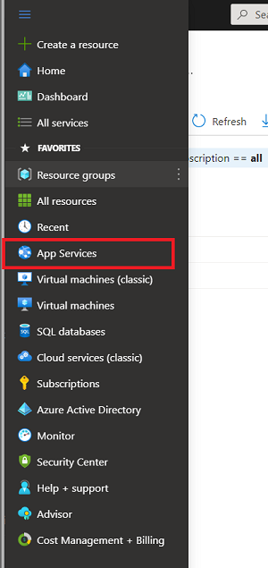
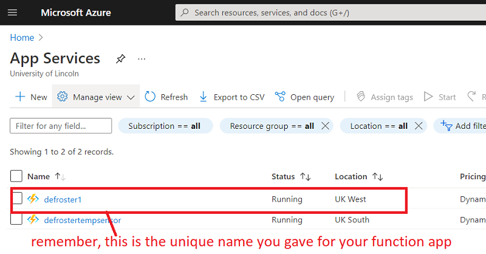
The page you will see next is the main settings page for your function app, from here you can view all the functions that are part of your function app. The no.4 box shows the base URL for your function app, while the no.3 box shows the resource group that your function apps belongs. The resource group is similar to a folder in that it will hold all of the cloud resources that are part of your function app. If we delete the resource group then we delete all of the services associated with the function app. Take note of *your* resource group that is shown.
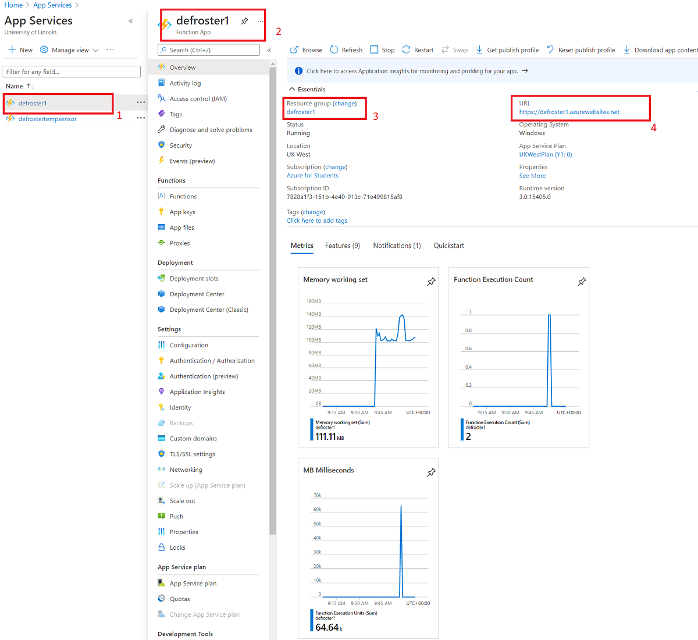
Next, you will view the HttpExample function that you created as part of your function app:
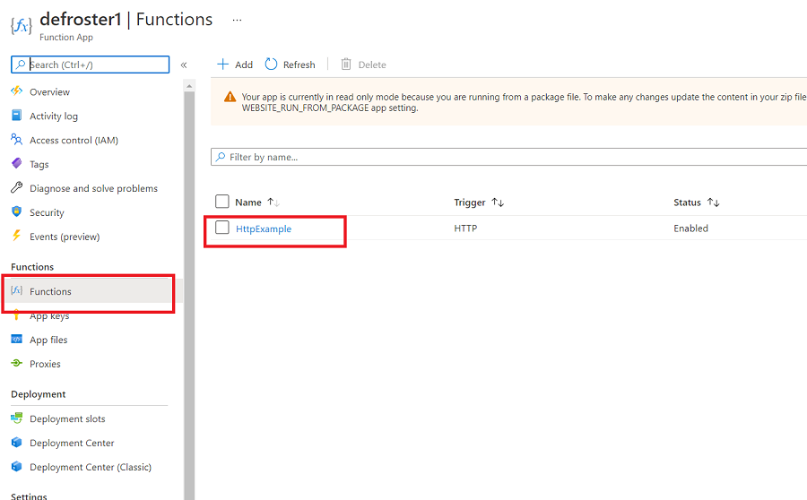
You can get the full URL of the function (as you did from VSC when you published it) by following steps below:
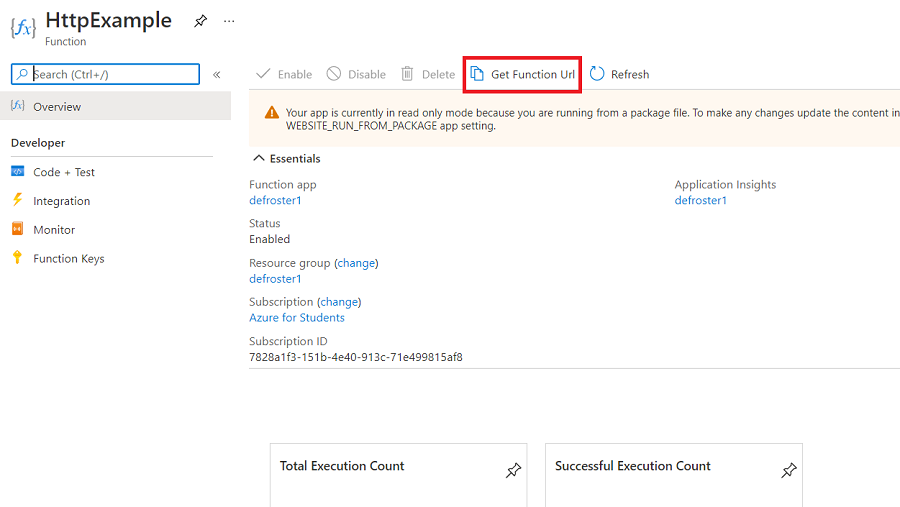
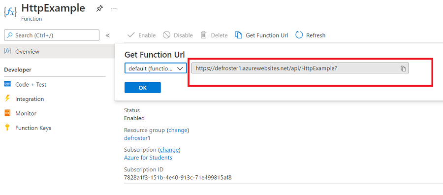
Cleaning up
Please do not go through this part of workshop before you have attempted the Independent tasks at the end, as you need the function code you just created. When you are finished with the independent tasks you can return here to complete the clean up process.
As you have deployed services to your Azure subscription these will start incurring costs that will be deducted from your $100 of free credit, it wont be much but as there is no need for the basic function app you have created it is best to delete it. You should have the resource group name handy from above, in my case the resource group name is defroster1. This link should take you to a list of all the resource groups created against your Azure subscription, you can also navigate to it manually by Home>Resource Groups:
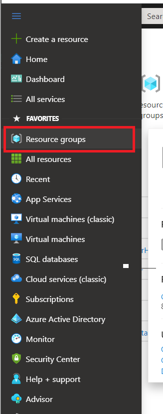
You should then locate your resouce group in the list and select it:
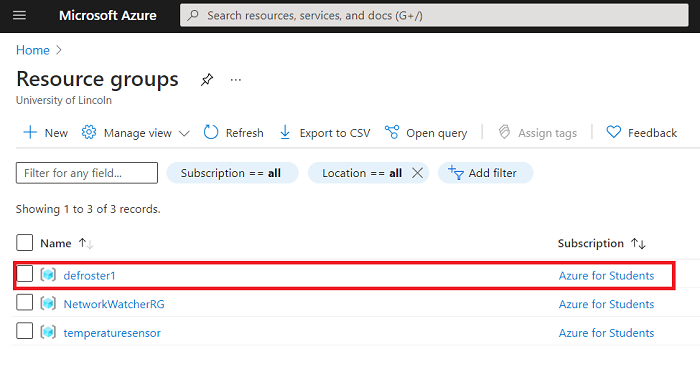
The large red box highlights all the cloud resources that are part of the resource group, you will be able to see your function app in the list, along with other cloud services that were automatically created as part of the function app.
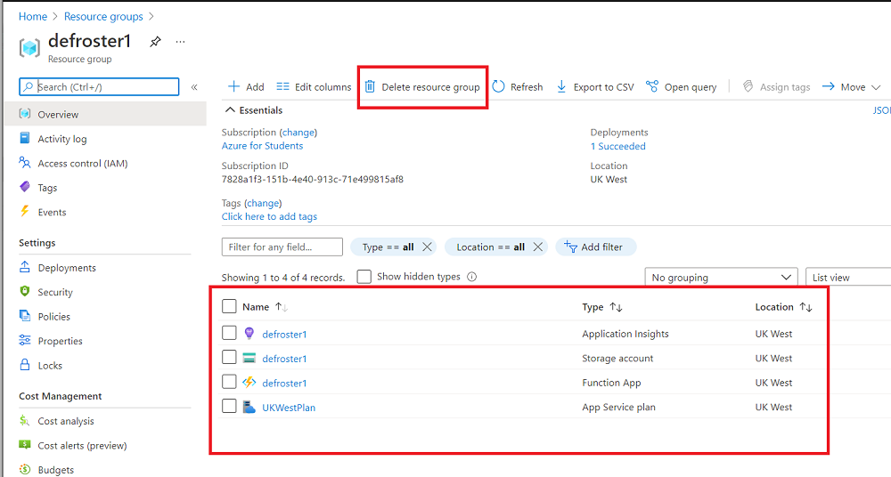
Click the Delete resource group option, you will then need to enter the name of the resouce group to confirm deletion. It may take a few minutes to fully delete the resource group and you can click on the notificatino to watch progress:
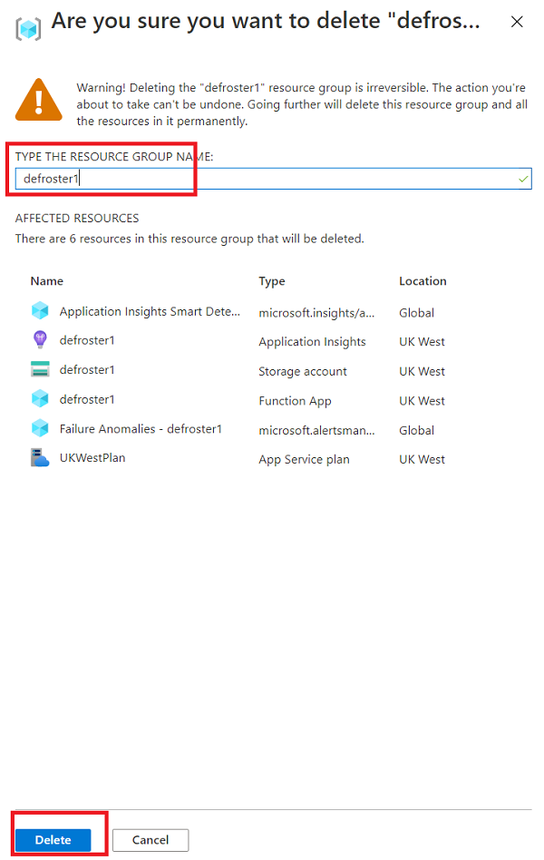
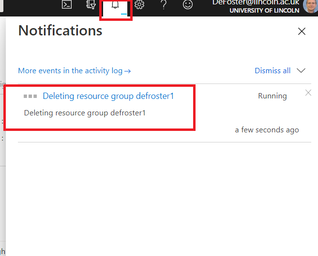
That brings us to the end of part 2 and the guided part of the workshop. Please attempt the independent task next either during the workshop session or in your own time.
You have just one task this week and it involves building on what you have learned with HTTP Trigger functions. If you look at the HttpExample.cs file in VSC (you create this function in part 1 of this workshop) you will notice the below using statement that imports the Newtonsoft.Json framework for use in your function code:
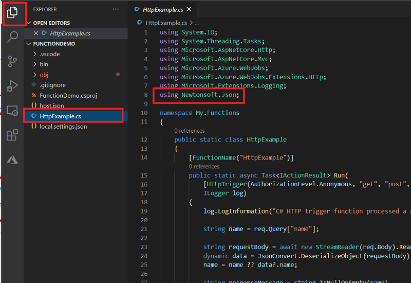
The Newtonsoft.Json framework is used in the HttpExample.cs code to deserialise the query string that is added to your function URL: name=Derek
Modify the code so the function URL can manage two query parameters, in other words, instead of just accepting the name parameter it can accept values for name and surname as below:
http://localhost:7071/api/HttpExample?name=Derek&surname=Foster
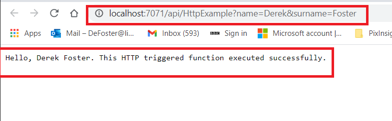
Explore how you can return data formatted as a JSON object instead of the curent messageResponse string.
That is all for this week, next week you will create a Cosmos DB and IoT Hub Trigger to store sensor data.